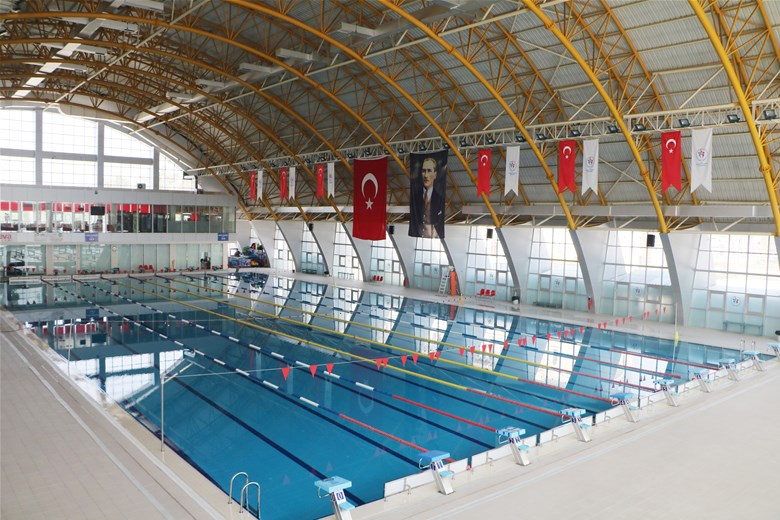
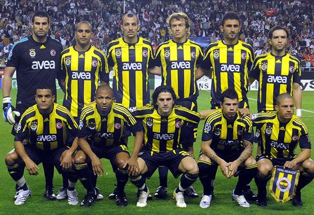

Hobilerim
- Futbol ve basketbol gibi spor aktiviteleri
- Bilgisayar oyunları oynamak
- Müzik dinlemek
- Kod yazmak ve bilgisayar mühendisliği alanında kendimi geliştirmek
- Yüzmek
- Müzik dinlemek
Favori aktivitem olan yüzmeyi genelde Sakarya olimpik yüzme havuzunda gerçekleştiririm, her hafta düzenli olarak en az 2km yüzmeye özen gösteririm.
Eğer Sakarya Olimpik Yüzme Havuzu'nun webde güncel yer alan kayıt ücretlerini görmek veya açılış kapanış saatleri gibi bilglere ulaşmak istiyorsanız BURAYI tıklayın.

